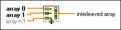
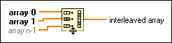

Interleave 1D Arrays Function
Owning Palette: Array VIs and Functions
Requires: Base Development System
Interleaves corresponding elements from the input arrays into a single output array.

 Add to the block diagram Add to the block diagram |
 Find on the palette Find on the palette |
Owning Palette: Array VIs and Functions
Requires: Base Development System
Interleaves corresponding elements from the input arrays into a single output array.

| Add to the block diagram |
Find on the palette |